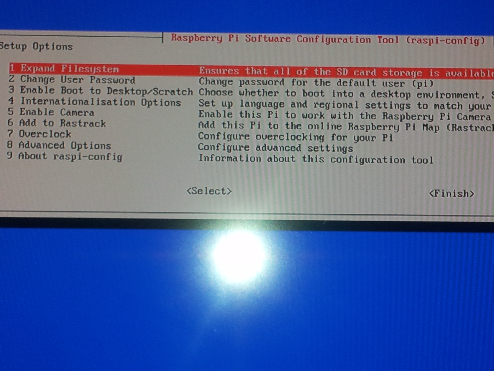
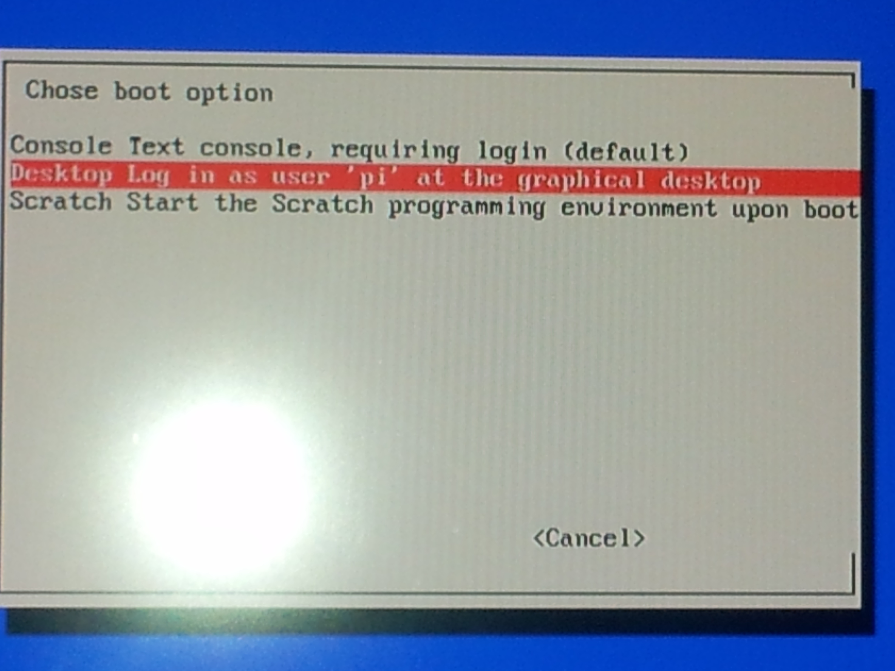
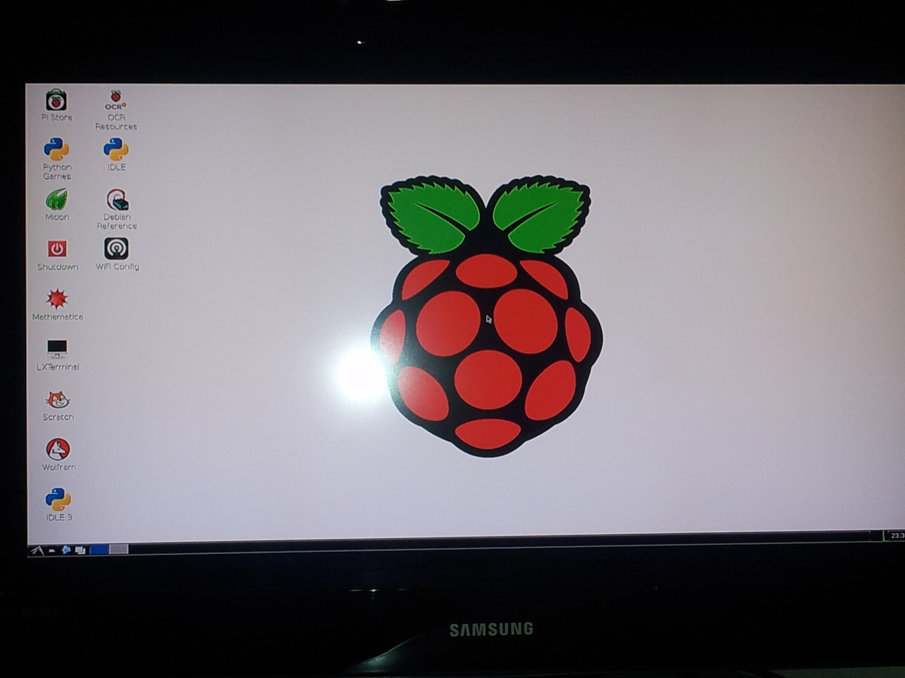
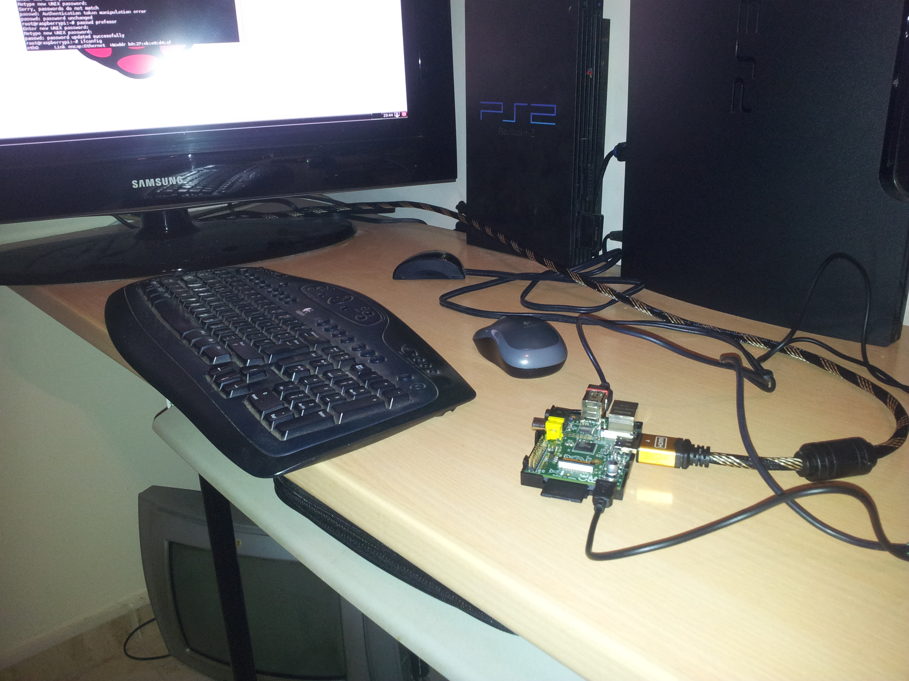

- Módulo: Fundamentos de Hardware
- Título del trabajo Raspberry Pi
- Componentes del grupo: Silvano Pérez Yanes
- Curso Académico: 2013/2014
- Fecha de entrega: 21 de Mayo de 2014
En esta actividad, realizamos una instalación del sistema operativo "raspbian", con la máquina raspberry pi.
Para la instalación del sistema operativo , primero hay que montarlo en la tarjeta sd, usando un programa destinado al montaje de la imagen del sistema operativo; esta herramienta hay que buscarla en internet. Nada más montada la imagen en la sd, podremos proceder al arranque de la raspberry, el cuál comenzara la instalación del sistema operativo.
Para terminar la instalación, procedemos a la activación del entorno gráfico.
A continuación, pasamos a configurar los usuarios de raspbian, en nuestro caso, la contraseña del root y la creación y constraseña del usuario profesor.
En la imagen siguiente muestra como esta montada la raspberry pi. Para el mosntaje de la imagen del sistema operativo hacia falta, formatear la sd, en mi caso al formato FAT32.
